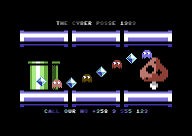

Loading sprites, PETSCII and SID with C64jasm
This post is a walkthrough of a small assembly example project for c64jasm. The example project was written to illustrate the use of following types of assets in an assembly program:
- PETSCII (using Petmate .json exported files)
- Sprites (authored in Spritemate, saved as .spd v2.0)
- SID music files
Project source code can be found in the c64jasm git repo under the examples/content-pipe folder.
This post is focused on consuming above file formats in c64jasm code and is not intended to be a tutorial on 6502 machine language.
To compile the app, ensure you have c64jasm installed (see c64jasm for instructions) and do:
git clone https://github.com/nurpax/c64jasm
cd c64jasm/examples/content-pipe
c64jasm --out demo.prg src/main.asm # assemble
x64 demo.prg # run it in viceThe resulting program should look something like this on a C64:

File overview
.vscode/ VSCode project
launch.json Running/debugging the output .prg on VICE
tasks.json Compiling
src/ All source files (.asm, .js) and assets
main.asm Entry point & most code
macros.asm Re-usable macro definitions
pet_rle.asm PETSCII RLE decompression routine
assets/ .spd, .json, .sid files
plugins/ c64jasm extensions written in JavaScript
math.js Generic math stuff like sine LUT generation
petscii.js Petmate .json reader + RLE packer
spd.js SpritePad 2.0 .spd loader
sid.js SID loaderLoading SID tunes with c64jasm
Note: I’ve written a longer blog post about c64jasm’s design goals. You can read it here.
Perhaps you noticed some JavaScript .js files in the file listing above? These are JavaScript modules that are callable by assembler pseudo directives.
Rather than using makefiles and a lot of assembler built-in functionality (say SID loading, RNG, math functions), you express your content transformations in JavaScript and glue everything together using c64jasm’s pseudo directives.
Let’s take a look at a concrete example of loading and using a SID tune. In order to use a SID tune in an assembly program, you need the following bits:
- Extract some header information from a .sid file to work out its expected loading address
- Extract the actual SID player and emit it in your output PRG at the right address
- Map the tune
initandplayfunctions to some assembly symbols that you canjsrinto
To load and extract the header bits from a SID tune, I use the following code.
examples/content-pipe/src/plugins/sid.js:
function readWord(buf, offs) {
return buf.readUInt8(offs) + (buf.readUInt8(offs+1) << 8);
}
function readWordBE(buf, offs) {
return (buf.readUInt8(offs)<<8) + buf.readUInt8(offs+1);
}
module.exports = ({readFileSync, resolveRelative}, filename) => {
const buf = readFileSync(resolveRelative(filename));
const version = readWordBE(buf, 4);
const dataOffset = readWordBE(buf, 6);
const startAddress = readWord(buf, dataOffset);
const init = readWordBE(buf, 0x0a);
const play = readWordBE(buf, 0x0c);
const res = {
startAddress,
data: [...buf.slice(dataOffset+2)],
init: startAddress,
play: startAddress + 3
}
return res;
}The code reads a SID file, extracts its headers and returns the relevant bits as a JavaScript object. Here’s what a typical return value might look like for the above function:
{ startAddress: 4096,
data: [ 76, 169, 16, 76, 177, 16, ... 2239 more items ],
init: 4096,
play: 4099
}Let’s break it down:
startAddressis the memory location where the SID needs to be placed (usually$1000)datais an array containing the tune data and the playerinitis the tune init function address (call this withjsr)playis what youjsrevery frame to playback music
To use this in an assembly program, here’s what you need to do (this goes into an .asm file, see examples/content-pipe/src/main.asm):
; Load the JavaScript sid loader module and bind it to `sid`
; ("plugins/sid" refers to ./src/plugins/sid.js)
!use "plugins/sid" as sid
; Call the sid loader, bind the return JavaScript object to
; the `music` variable. The object fields such as `init`,
; `startAddress`, `play` can be accessed by the dot-operator
; like `music.init`.
!let music = sid("assets/Load_Line.sid")
;....
start_demo: {
; Initialize sub-tune 0
lda #0
jsr music.init
; if SID is at $1000, `music.init` will expand to $1000
}
per_frame: {
jsr music.play ; e.g., JSR $1003
}
; Emit the SID player and tune data into the output binary
* = music.startAddress
sid_data: !byte music.dataThe last line with the !byte directive may not be immediately obvious if you’re used to !byte <expr> always emitting just a single byte. The !byte directive in c64jasm supports array arguments – !byte some_array_value will loop over the array emitting a byte for each element. For example:
; Let's assume data_array is an array of [0,1,2,3]
; The below two lines are equivalent
!byte data_array
!byte 0, 1, 2, 3
; You can also write it as an explicit for-loop over the
; values in `data_array`:
!for b in data_array {
!byte b
}Importing PETSCII graphics
This sections explains how to pull PETSCII graphics authored in Petmate into your program. Petmate supports a number of different export formats, but we will be using Petmate’s JSON export format. It’s accessible from Petmate’s File / Export As / JSON (.json) menu. This format is intended to be consumed by scripts written in say Python or JavaScript.
A Petmate exported JSON file would look something like this:
{
"version": 1,
"framebufs": [
{
"width": 40,
"height": 25,
"backgroundColor": 0,
"borderColor": 0,
"charset": "upper",
"name": "screen_003",
"screencodes": [ /* width*height bytes */ ],
"colors": [ /* width*height bytes */ ]
}
]
}Suppose you wanted to include the screencodes for a PETSCII JSON file called foo.json, here’s how you’d express that in assembly code:
; Load a JSON file using the c64jasm's built-in `loadJson` function
!let petscii = loadJson("foo.json")
; Emit a screencode array into the compiled program
petscii_screencodes: !byte petscii.framebufs[0].screencodesBut that’s.. too easy. 😉
The example project does something more complicated to illustrate the expressiveness of c64jasm JavaScript extensions.
Rather than simply loading a JSON file and returning it, the code in examples/content-pipe/src/plugins/petscii.js loads the input JSON file and RLE compresses it to save some RAM.
Here’s how this extension is used in assembly code:
!use "plugins/petscii" as petscii
!let petscii_background = petscii.rlePetsciiJson("assets/pipes-pet.json")
; Emit the RLE compressed PETSCII bytes (both screencodes and color)
background_petscii_rle: !byte petscii_background.interleavedSource file examples/content-pipe/src/pet_rle.asm contains an implementation of a RLE decoder that can be used to display a PETSCII screen on the C64 screen. All the symbols in this file are wrapped in a scope named pet_rle using the !filescope directive, so to use the decode function from another .asm file, you need to use a scope qualifier pet_rle::decode to refer to the decoder function.
Let’s piece all this together:
!use "plugins/petscii" as petscii
!let petscii_background = petscii.rlePetsciiJson("assets/pipes-pet.json")
!include "pet_rle.asm" ; include RLE decoder (e.g., pet_rle::decode)
show_petscii: {
; Decompress a PETSCII image on the display
lda #0
sta $d020
sta $d021
lda #<background_petscii_rle
ldx #>background_petscii_rle
jsr pet_rle::decode
rts
}
background_petscii_rle: !byte petscii_background.interleavedWhat’s great about this approach is you don’t need a separate build step to process your assets into compressed RLE with, say, Python and makefiles. Instead, loading and compressing PETSCII happens as part of your normal assembly compile step.
Using Spritemate authored sprites
Next up, sprite graphics!
I used Spritemate to draw sprites. Spritemate is a free, web-based C64 sprite editor written by @awsm9000. Spritemate supports saving SpritePad .spd v2.0 files which is what we’ll use here.
As in the other sections, we need a JavaScript module to load and parse an .spd file, and some assembly code to do something with it.
Let’s take a look at the JavaScript .spd loader first.
examples/content-pipe/src/plugins/spd.js:
// File format detailed in https://csdb.dk/forums/?roomid=7&topicid=125812
module.exports = ({readFileSync, resolveRelative}, filename) => {
const buf = readFileSync(resolveRelative(filename));
const numSprites = buf.readUInt8(4)+1;
const data = [];
for (let i = 0; i < numSprites; i++) {
const offs = i*64+9;
const bytes = [];
for (let j = 0; j < 64; j++) {
bytes.push(buf.readUInt8(offs + j));
}
data.push(bytes);
}
return {
numSprites,
multicol1: buf.readUInt8(7),
multicol2: buf.readUInt8(8),
data
};
}This loads an .spd file, looks at the header information and returns an object describing file contents. The important fields are:
numSprites: how many sprites does the file containmulticol1,multicol2: multicolor colors used for the spritesdata: an array of shape[numSprites][64]containing actual pixel data
The importer is hardcoded for multicolor sprites, but it wouldn’t be too hard to extend it to support single color too.
Here’s how to use it in assembly code:
!use "plugins/spd" as spd ; .spd loader
!let pacman_spd = spd("assets/pacman.spd")
show_sprites: {
; point all 8 sprites to pacman
lda #sprite_data/64
!for i in range(8) {
sta $07f8 + i
}
; set multicolor registers
lda #pacman_spd.multicol1
sta $d025
lda #pacman_spd.multicol2
sta $d026
; ...
rts
}
!align 64 ; sprites must be 64-byte aligned
sprite_data:
!byte pacman_spd.data[0]Wrap up
We looked at importing various common graphics and sound formats into a C64 assembly program.
You might want to read more about c64jasm if you’re like me and enjoy writing code in an environment that comes with:
- Declarative build process (no manual tracking down of build dependencies, no makefiles)
- Good VSCode integration (run & debug from VSCode, VSCode syntax highlighting, error reporting within the editor)
- Fast “Node style” watched builds: have the compiler watch your source dir and automatically trigger a rebuild as soon as any of the input source files changed
- Just generally feeling adventurous and wanting to do things in a non-standard way
BTW, if you missed my recent C64 demo, you can download it / watch it here. It’s also developed with c64jasm.